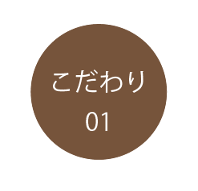
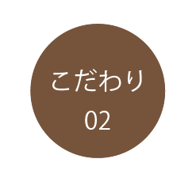

飲むだけで、買うだけで、
仕事を生み出す
就労支援継続支援事業所の
仕事を生み出す
就労継続支援事業所は多様な形で運営されていますが、自動車部品の組み立てや取り付けなど単純作業の仕事依頼を受注していることが多く、コロナ禍の影響でその仕事が大幅に減少この問題を社会を巻き込んで解決する方法が
選別・包装だけで終わりではなく 使用済みコーヒーカスや期限切れ珈琲豆を回収し珈琲雑貨に生まれ変える工程も加えることで、 ①仕事が途切れない仕組み作り ②珈琲を最後まで無駄なく使う というメリットが生まれます
美味しい珈琲だからこそ
意味がある
→海外のコーヒー農家視察実績もある最高品質の珈琲豆の仕入れ
→イタリアで修行した、聴覚障害をもつバリスタが焙煎を担当
-

甘味が一番
苦味はいらない 本当に美味しい珈琲は そのままで甘さ際立つ 華やかな香りが特徴です
-

自社生産にこだわり
障害を持つ仲間たちと共に、 可能な限り手作業で 1つずつ作り上げていきます
法人・店舗向けご案内
-
珈琲豆の卸売
-
オリジナルドリップパック
-
珈琲豆定額便
- オンラインストア
詳しくは下記のお問い合わせフォームよりご連絡を頂ければ、資料をお送り致します。